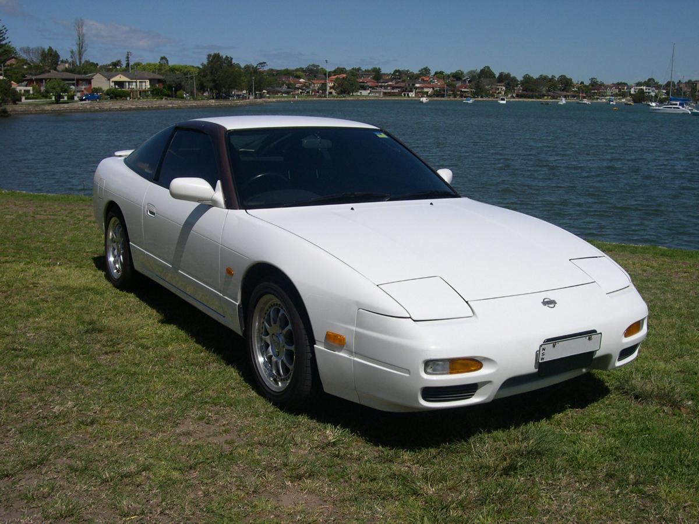
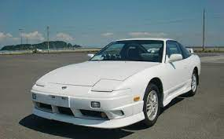
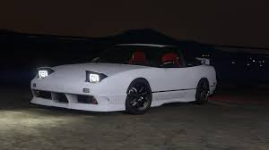

History
The 180SX was built and sold by Nissan as a sister model to the Nissan Silvia from model year 1989 through 1998, but sold at two different Japanese Nissan dealerships. The Silvia was sold at Nissan Prince Store, and the 180SX was sold at Nissan Bluebird Store locations.
The S13 Silvia was discontinued in 1993, but the 180SX was successful enough to convince Nissan to keep it in the market for the full length of the next generation Silvia (S14). The 180SX differed from the S13 Silvia in that it featured pop-up headlights and a liftgate with different body work at the rear of the vehicle. Specifications and equipment were similar; however, the naturally aspirated CA18DE engine was not offered. The name 180SX was originally in reference to the 1.8 liter displacement CA18DET engine used in the chassis. In 1991, however, the engine was upgraded to a 2.0 liter model, offered in two forms: the turbocharged SR20DET variant and the naturally aspirated SR20DE engine, which was introduced in 1996. Although the new engine was of larger displacement, the 180SX nomenclature remained.
180SX was also a trim level of the S110 Silvia in Europe. The badges for this model read "Silvia 180SX", so this car is not properly a 180SX by model, but a version of the Silvia instead.
Other discrepancies from this standard were distributed to Micronesia and South Pacific islands, including LHD cars with 180SX badges and non-retractable headlamps.
Like the Japanese 180SX SR20DET discrepancy, European, as well as South African models of the S13 chassis were called 200SX though equipped with the CA18DET engine.
In North America, It was sold as the Nissan 240SX Fastback with the KA24DE engine and various other trim differences.
In Europe the car was sold as a 200SX and only featured the CA18DET engine producing 169 PS (124 kW; 167 hp) through the rear wheels, taking it to 100 km/h (62 mph) in 7.5 seconds and onto 220 km/h. The car had a facelift in 1991 with new smoother bumpers, limited slip differential, and larger brakes. This 200sx was sold between 1989 and 1994 until the change to the 200SX S14 version.
Certain year model 180SX and Silvias are now available for import into the US market with EPA and DOT exemptions under the 25 year classic import law. The United States has a handful of JDM Import companies.
  Engines
Breakdown of engine codes:
- SR20DET
- SR20DE
- CA18DET
The sr20det is a popular inline four-cylinder engine fitted into a variety of cars, generally the Nissan Silvia and 180SX. It also came in the Pulsar GTI-R, Nissan NX Coupe and the Nissan Bluebird. This engine replaced the CA18DE and CA18DET that originally powered the Silvia and 180SX. The CA18 was deemed too expensive to produce and no longer met Japanese emission standards, so it was replaced by the SR20. The SR, just like the out-going CA, was a turbocharged intercooled engine in top form. Nissan also produced a cheaper naturally aspirated version called the SR20DE.
The SR20DE was a cheaper Naturally aspirated eninge for the 180sx and the Silvias.
The 1.8 L CA18DET was the last version of the CA engine to be released. There were 2 versions of the CA18DET available, yet only one was produced for Japan. This engine is known for stronger torque characteristics, as well as faster spool at lower RPMs. However, due to displacement-based taxation and cost of emissions testing in Europe, the CA18DET was sold as the only available engine in the S13 chassis 200SX (Euro model) until replaced by the S14 in 1994.
Generations
The 180SX came in three major iterations: first was released in March 1989, the second from January 1991 to August 1996, and the third that ended production in December 1998.
The first iteration of the 180SX came in two versions called Type I (standard type) and Type II (advanced type). Nissan's HICAS II four wheel steering system was optional only on the Type II 180SX. All versions had the CA18DET engine with 175 PS. The 5-speed manual and 4-speed automatic transmissions were available in all types. HICAS-equipped cars have a leading K in their model code; RS13 thus becomes KRS13 when fitted with HICAS.
The second iteration 180SX was released in January 1991 and included several major changes from the first model. This included the SR20DET engine with 205 PS. Although the engine was larger than the previous CA18DET engine the '180SX' nomenclature remained. The brakes were enlarged and limited slip differential added. The front bumper and parts of the interior were also redesigned. Type I and Type II were once again offered with only trim differences separating the two. The 15-inch alloy wheels also changed in design from the first model. Nissan's Super HICAS four wheel steering was an option on all models as were 5-speed manual and 4-speed automatic transmissions.
An additional facelift was performed in 1994, the trim levels were renamed to Type R and Type X, with Type X being the higher of the two. Overall the car remained almost unchanged however.
A final facelift to the middle model occurred in August 1996 with the addition of a driver's side airbag and a change of alloy wheels amongst other minor details.
The final iteration was released in August 1996. It had a revised front bumper, tail lights, 15-inch wheels and interior. The mechanical and safety package received minor changes, such as the addition of a driver's side airbag, seat belt pre-tensioners, and some changes in the wiring and ECU. Three levels of 180SX were offered: Type X, Type S and Type R, with the Type S being the first 180SX to be offered without a turbocharged engine.
The Type X and Type R both shared the same 205 PS (202 hp) engine and overall mechanical package however the Type R lacked many of the cosmetic additions of the Type X such as the front lip, rear spoiler, side skirts, rear valence and 15-inch alloy wheels. The Type S was powered by a naturally aspirated SR20DE engine with 140 PS, but was similar in mechanical and cosmetic details to the top of the range Type X. The Type S however did not have the option of Nissan's Super HICAS four-wheel steering system like the turbocharged models did.
The Type X and Type R ceased production in October 1998 however the Type S and an additional naturally aspirated model called the Type G continued production until December 1998 when all 180SX production ceased.
{kind=link}